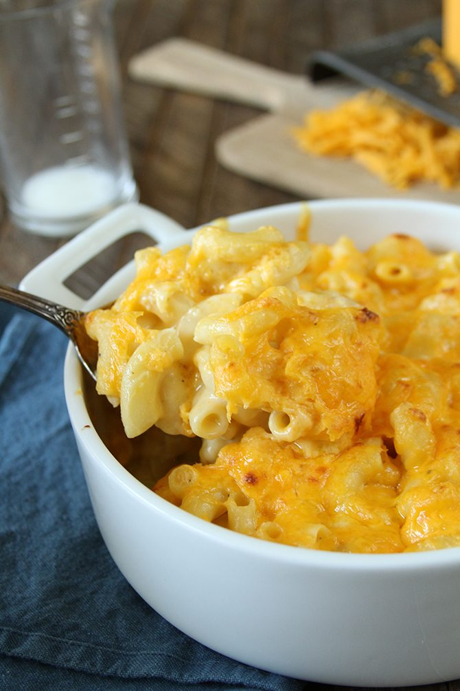

Southern Style Mac N' Cheese

Description:
This southern baked macaronis and cheese is full of soul and flavor. Smoked cheddar is the secret to this truly
addictive, baked macaroni and cheese recipe.
Ingredients:
- 3 cups elbow macaroni uncooked
- 1 ½ cups milk
- 1/2 cup heavy whipping cream
- 1 cup Colby & Monterey Jack shredded (cheese blend)
- 6-8 oz Velveeta cheese shredded (feel free to cut back on the Velveeta if you don't want it to be super
creamy)
- 1 cup sharp cheddar shredded (can use less if you don't like a sharp taste in your mac n cheese)
- salt & pepper to taste
- 2 eggs
- 1 cup smoked cheddar cheese shredded (a must)
Steps:
- Preheat the oven to 350F
- Cook macaroni until just al dente or a little under al dente. (Look on the back of the box to see how long
you need to cook your pasta for it to reach al dente.) Be careful not to overcook.
- Drain pasta and set aside.
- In a large bowl, add milk, heavy cream & cheeses (except for the smoked cheddar).
- Stir to combine.
- Taste the milk mixture and add salt & pepper until it has a good taste. (You can also add in other
seasonings like onion powder, paprika, etc. Tasting will help avoid having a plain, bland baked macaroni &
cheese.)
- When you are content with the taste, add the eggs.
- Stir well until combined.
- Butter a 9 x 9-inch baking dish.
- Add macaroni to the baking dish in layers and pour cheese mixture over it. Make sure the cheese is
distributed well.
- Top with the smoked cheddar cheese. (I add a little more Colby jack as well.) Sprinkle with paprika and/or
black pepper, if desired.
- Bake for 35-45 minutes. Do not overbake. It may be a bit jiggly when you take it out of the oven. It will
firm up as it cool.